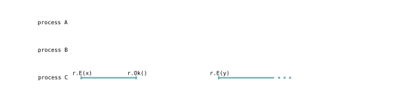
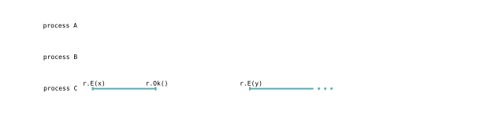

Visualizing Linearizability
In Time, Clocks, and the Ordering of Events in a Distributed System, Leslie Lamport uses space-time diagrams (like the one in Figure 1) to help the reader form an intuition about the partial ordering of events in a distributed system. In Linearizability: A Correctness Condition for Concurrent Objects, Maurice Herlihy and Jeannette Wing also use diagrams to explain linearizability. However, Herlihy and Wing introduce a lot of definitions without explaining their intuitive graphical interpretation. In this article, I'll review each of the definitions introduced in Herlihy and Wing's paper and explain how to understand them very intuitively using pictures.
Basic Definitions
Herlihy and Wing's system is composed of processes which represent independent sequential threads of execution. Intuitively, a process could be a thread in a process or a process on a computer. We use capital letters like $A$, $B$, and $C$ to range over processes.
The system also has objects which represent the objects
you're familiar with from object oriented programming languages. For
example, an object could be an ArrayList in Java, a
vector in C++, or a list in Python. We use
lowercase letters like $p$ and $q$ to range over objects.
These objects also have methods. Method invocations are
divided into two distinct parts: the invocation and the
response. In programming languages like C++, you only see
the invocation like v.push_back(x), but in our system, there
is an invocation $q.Enqueue(x)$ and a response $q.Ok()$. You can think of
the response as the return status of a method. We use lowercase letters
like $x$ and $y$ to range over arguments to methods.
An event is a three tuple of an object, an invocation or response, and a process. You can read the event $(q, Enqueue(x), A)$ as "Process $A$ performs $q.Enqueue(x)$" where $q$ is a queue and $Enqueue(x)$ enqueues $x$ onto $q$. For convenience, I'll denote such an event as $A.q.Enqueue(x)$, or $q.Enqueue(x)$ if the invoking process is obvious from context.
A history is a finite sequence of events. All of the following are histories. Here, $E$ and $D$ are abbreviations for $Enqueue$ and $Dequeue$.
- $[$$]$
- $[$$A.p.E(x)$, $A.p.Ok()$$]$
- $[$$A.p.E(x)$, $B.p.D()$, $B.p.Ok(x)$$]$
- $[$$A.p.E(x)$, $A.p.Ok()$, $B.p.E(y)$, $A.p.D()$, $B.p.Ok()$, $A.p.Ok(y)$$]$
A history is sequential if it begins with an invocation and alternates between invocations and responses. For example, $[A.p.E(x), A.p.Ok()]$ and $[A.p.E(x). A.p.Ok(), A.p.E(y)]$ are both sequential while $[A.p.E(x), A.p.E(x)]$ and $A.p.E(x), A.p.Ok(), A.p.Ok()$ are not.
An invocation is pending in a sequential history if it has no subsequent matching response. If an invocation does have a subsequent matching response, the pair of events is called an operation.
Now with Pictures
Now we know enough definitions to introduce some pictures. Let's consider the following history which we'll denote $H_1$.
- $A.p.E(x)$
- $B.p.E(y)$
- $B.p.Ok()$
- $C.r.E(x)$
- $A.p.Ok()$
- $B.q.E(z)$
- $A.q.D()$
- $B.q.Ok()$
- $A.q.Ok(z)$
- $C.r.Ok()$
- $C.r.E(y)$
We can represent $H_1$ graphically with Figure 2.

Each event is represented as a small vertical tick. Each operation is represented as a horizontal line. Pending invocations are extended with a line and an ellipsis. Each process is represented as a horizontal axis. The events of each process are displayed on its axis. The events and lines connecting events are colored according to their object where each object gets a unique color.
The history $complete(H)$ of a history $H$ is the maximal subsequence of $H$ without pending invocations. Graphically, $complete(H)$ erases all pending requests. For example $complete(H_1)$ is given in Figure 3.
$H | A$ is the subsequence of $H$ of all events invoked by $A$. Graphically, in $H | A$ we erase all the events that don't fall on process $A$'s axis. $H_1 | A$, $H_1 | B$, and $H_1 | C$ are given in Figure 4 - Figure 6.


Similarly, $H|p$ is the subsequence of $H$ of all all events invoked on $p$. Graphically, in $H | p$, we erase all the events that aren't the same color as $p$. For example, $H_1 | p$, $H_1 | q$, and $H_1 | r$ are given in Figure 7 - Figure 9.


Equivalence
Two histories $H$ and $H'$ are said to be equivalent if they satisfy the following property.
Graphically, two histories are considered equivalent if all of their corresponding process axes are pairwise equivalent. Recall that a process' axis is a subsequence, so two axes are equivalent if they contain the same events in the same order. The placement of the events is not important. Take for example $H_2$:
- $C.r.E(x)$
- $B.p.E(y)$
- $C.r.Ok()$
- $A.p.E(x)$
- $A.p.Ok()$
- $C.r.E(y)$
- $B.p.Ok()$
- $B.q.E(z)$
- $A.q.D()$
- $B.q.Ok()$
- $A.q.Ok(z)$
$H_2$ is depicted in Figure 10.

Now, let's look at $H_1 | P$ and $H_2 | P$ for $P \in \set{A, B, C}$ and see if $H_1$ and $H_2$ are equivalent. This is shown in Figure 11 - Figure 13.

 

Since $H_1 | A$ = $H_2 | A$, $H_1 | B$ = $H_2 | B$, and $H_1 | C$ = $H_2 | C$, $H_1$ and $H_2$ are equivalent.
Linearizability
Before we get to linearizability, let's first define an irreflexive partial ordering of operations in a history. If you don't know what an irreflexive partial ordering is, my previous blog on Lamport's Logical Clocks explains it in detail. We denote the ordering on $H$ as $\lt_H$. Two operations $o_1$ and $o_2$ are in $\lt_H$ (i.e. $o_1 \lt o_2$) if the response of $o_1$ occurs before the invocation of $o_2$.
Graphically, this means that $o_1$ and $o_2$ do not overlap and that $o_1$ is to the left of $o_2$. If the two operations do overlap, they are not related. For example in Figure 2, if we let process $A$'s first operation be $A_1$ and let process $B$'s second operation be $B_2$, then $A_1 \lt_H B_2$. Likewise, $A_1$ and $B_1$ are not related.
Finally, we can define linearizability! A history $H$ is linearizable if we can add response events to the end of it to form a new history $H'$ such that:
- $complete(H')$ is equivalent to a sequential history $S$, and
- $\lt_H \subseteq \lt_S$
We call $S$ a linearization of $H$. Graphically, this is how you find a linearization of a history $H$.
- First, add any necessary response events to the end of the history. This will close any pending events and turn them into operations. This new history is called $H'$.
- Compute $complete(H')$. The diagram of $complete(H')$ should not contain any ellipses.
- Slide and shrink events in each process' axis until the history is sequential. You can't slide an event past another event since this violate equivalence. Also, if you are sliding two operations $o_1$ and $o_2$ where $o_1 \lt_H o_2$, then you can't slide $o_1$ rightward past the start of $o_2$. This would violate the condition that $\lt_H \subseteq \lt_S$.
Let's demonstrate this process by showing that $H_1$ is linearizable. We'll do so by finding a linearization $S_1$. First, let's extend $H_1$ with a response event for process $C$. Call this new history $H_1'$. $H_1'$ is shown in Figure 12.
Now, let's form $S_1$ which is shown in Figure 13. If you compare $H_1' | P$ with $S_1 | P$ for $P \in \set{A, B, C}$, you'll see that $S_1$ and $H_1'$ are equivalent. Also, $\lt_{H_1} \subseteq \lt_{S_1}$. Thus, $H_1$ is linearizable!

Let's look at one more history and try to figure out if it's linearizable. Consider $H_3$ as shown in Figure 14.
There are two potential linearizations we could form from $H_3$: $H_3'$ and $H_3''$ shown in Figure 15 and Figure 16. However, both of these histories violate the sequential semantics of the queue $p$ and are therefore invalid histories. Thus, $H_3$ is not linearizable.


Implementation
If you're curious how I made all the figures in this article, check out the source code in GitHub! Here's a snippet of the code that made $H_1$, $H_1 | A$, $H_1 | B$, $H_1 | C$, $H_1 | p$, $H_1 | q$, and $H_1 | r$.
H1 = History([
A.p.E(x),
B.p.E(y),
B.p.Ok(),
C.r.E(x),
A.p.Ok(),
B.q.E(z),
A.q.D(),
B.q.Ok(),
A.q.Ok(z),
C.r.Ok(),
C.r.E(y),
])
H1.plot("H1.svg")
(H1 | A).plot("H1A.svg")
(H1 | B).plot("H1B.svg")
(H1 | C).plot("H1C.svg")
(H1 | p).plot("H1p.svg")
(H1 | q).plot("H1q.svg")
(H1 | r).plot("H1r.svg")